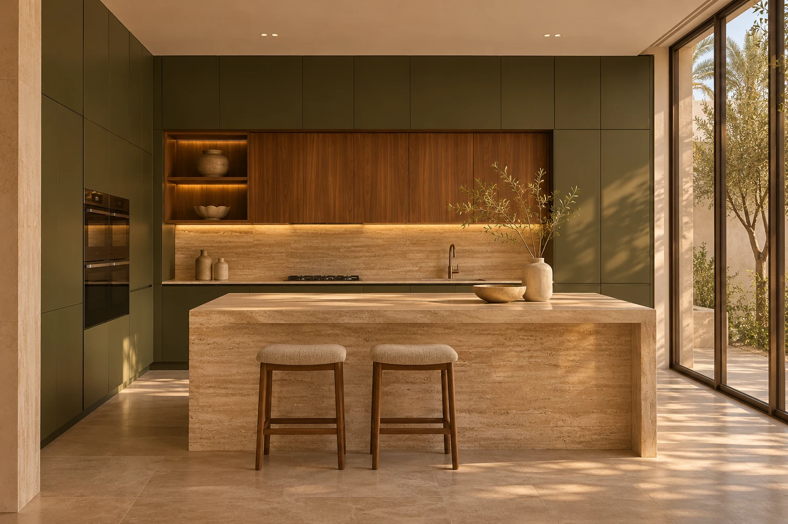
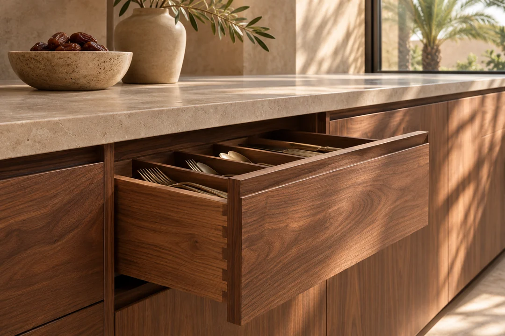

تصميم وتفصيل مطابخ في الرياض
كل شيء في مكانه
سطح واسع للتحضير، وأدراج قريبة من الموقد، وخزائن تستفيد من الزوايا. نرتّب معك تفاصيل مطبخك من أول قياس إلى التركيب.

- قياس المساحة
- تصميم وتوزيع
- تفصيل وتركيب
أفكار لتوزيع مطبخك
مطبخ زاوية يترك الوسط مفتوحًا، أو جزيرة تزيد مساحة التحضير. شوف أي توزيع يناسب مساحتك.
تصوّرات للمطابخ تعرض خيارات التوزيع والتشطيب.

واجهات وأسطح للعمل اليومي
شوف اللون تحت إضاءة مطبخك. وجرّب ملمس السطح وطريقة تنظيفه قبل ما تختار.
مطفي أو بنقشة خشب؟
المطفي يعطي الواجهة لونًا هادئًا، وضوء النهار يبرز نقشة الخشب. جرّب تفتح وتقفل عيّنة الباب عشان تشوف الحواف وتحس بمسكته.
من المقاس إلى التركيب
نشوف المساحة أول، ثم نتفق على التوزيع والخامات قبل ما يبدأ التفصيل.
نقيس المكان
نقيس الجدران وفتحات الأبواب، ونحدد نقاط الماء والكهرباء.
نتفق على التوزيع
نوزّع الأجهزة والخزائن، ونتأكد إن الأبواب والأدراج تفتح براحة.
نعتمد التفاصيل
نراجع معك الخامات واللون، ونتفق على تفاصيل الطلب والسعر والمدة قبل التصنيع.
نركّب المطبخ
بعد التركيب نراجع معك استواء السطح ونجرّب الأبواب والأدراج.
أسئلة قبل التفصيل
كيف يتحدد سعر المطبخ؟
يعتمد السعر على المقاسات والخامات وعدد الخزائن والأدراج، وعلى نوع سطح العمل والتجهيزات اللي تختارها.
أقدر أبدأ إذا ما عندي مقاسات؟
إيه. يكفي في البداية اسم الحي ووصف المكان. المخطط أو الصورة يساعدان في النقاش، ومقاسات التنفيذ نعتمدها بعد القياس.
كم يأخذ التفصيل والتركيب؟
نحدد مدة التنفيذ بعد اعتماد التصميم والخامات والتأكد من جاهزية المكان للتركيب.
متى أختار الفرن والثلاجة؟
قبل اعتماد توزيع الخزائن، خصوصًا إذا كان الفرن أو الثلاجة مدمجين. كذا نحسب المقاس والتهوية ونحدد مكان التوصيلات.
الرياض، السعودية
اطلب عرض سعر لمطبخك
ابدأ باسم الحي ونوع المشروع. وإذا عندك مقاسات تقريبية أو تصميم أعجبك من المعرض، أضفه للطلب.
مراسلة فيوتشر كيت موقع المعرض على الخريطة